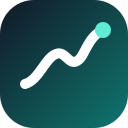

Fastest Momentum
Diurutkan dari momentum score.

LIVE FOOD INTELLIGENCE
Memuat data terbaru…
Momentum tinggi sebelum volume menjadi besar.
Tren dengan reach, engagement, dan creator spread terkuat.
Diurutkan dari momentum score.
Distribusi tren aktif per kategori.
TREND EXPLORER
| Trend | Lifecycle | Viral | Momentum | Growth | Reach | Sources | Updated |
|---|
DATA TRANSPARENCY
Setiap angka menampilkan sumber, mode pengambilan, dan waktu data terakhir.
SCORING LOGIC
Google Trends dan YouTube berjalan otomatis; TikTok dan Instagram masuk sebagai signal terverifikasi.
Taksonomi memisahkan dessert, pastry, cake, beverage, snack, main course, dan ingredient.
Sistem membandingkan metric value setiap sumber dengan snapshot 6 jam sampai 7 hari sebelumnya.
Viral score menggabungkan growth, velocity, reach, engagement termasuk shares, creators, search, dan cross-source.
Trend masuk ke Early Signal, Emerging, Growing, Viral, Saturated, Declining, atau Monitor.
Setiap trend memiliki link video/artikel, timestamp, data mode, serta histori score.
FREE SOCIAL SIGNAL INPUT
TikTok & Instagram Inbox
Masukkan metrik aktual dari TikTok Creative Center atau Instagram. Semua signal diberi label Manual Verified.
Add social signal
Gunakan angka yang terlihat saat pengambilan data.
Bulk CSV import
Gunakan template untuk beberapa signal sekaligus.
Recent Manual Signals
Riwayat TikTok dan Instagram yang sudah masuk ke scoring.